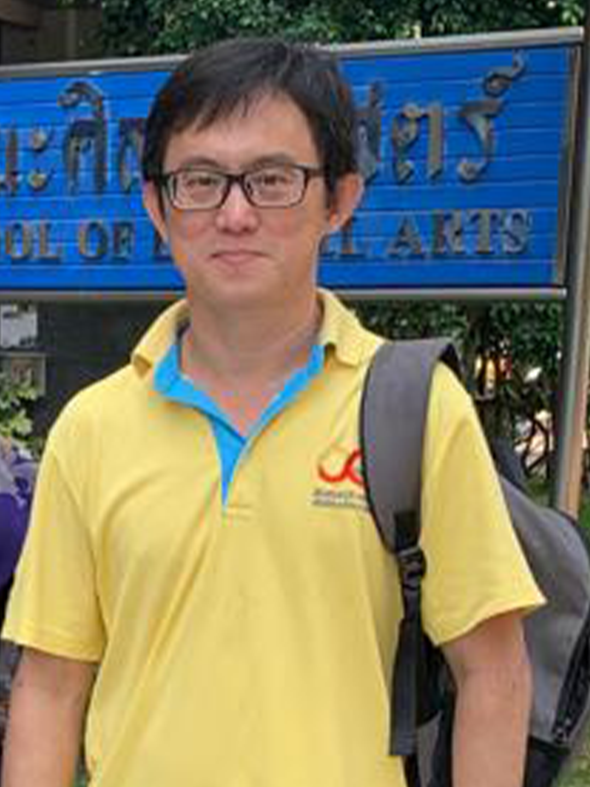

Guest of Honour
Dr. Madhan Kumar Srinivasan
Dr. Madhan Kumar Srinivasan, an IIM-Calcutta alumnus & a Prolific Inventor (Title-of-Honor given by Accenture), is a technopreneur and an inventor of 86 Patents that are Commercially Successful Products in the USA, Europe/UK, Australia Singapore & India regions & 34 Patents Granted in the USA, UK, Germany, France, Ireland & Australia. He has built a multi-million-dollar business from scratch and served 300+ international clients worldwide including many Fortune 500 companies resulting in $100+ Millions in cost savings annually. He is a pioneer and part of India’s Cloud Success Story, who built the first-ever native private cloud in India at Infosys in 2011. An early entrepreneur with 19+ years of experience and 30+ research publications, he is currently the ‘CEO & Co-founder’ of Wise Work, ‘CTO & Co-founder’ at DNA World & Hue Tech Dubai, ‘National Advisor’, Project VisioNxt, Govt. of India, ‘Advisory Board Member' at Cambridge Scholars Publishing, UK and the ‘Founder Member’ of Cloud Computing Innovation Council of India (CCICI). Before Hue Tech, he has served organizations like Accenture Innovation Hub (AVP & Lead – Cloud AI & Patents), GSTF Singapore (Asst. Director – Technology), Infosys (Sr. Member – Research), and Max Tecz Corporation (CEO & Co-founder). He advises and consults large organizations, Ministries, Banks, Startups, Universities/Educational Institutions in Govt of India, Govt of Singapore, US, Europe, Jordan, Oman, and the Philippines.

Dr. Malathy Batumalay
Malathy Batumalay is currently attached to INTI International University, Malaysia. She hold a PhD in Photonics Engineering from University Malaya, Malaysia. She focused on research in lasers, fiber optics, and photonics engineering. In her previous research, she transformed fiber optic into sensors that track is able to detect changes in relative humidity and chemical solution. In order to further investigate the behavior and characteristics of fiber optics sensors and plasmonic sensors, she collaborates with University Malaya, University Teknikal Malaysia Melaka and Airlangga University, Indonesia. To date, she has successfully published high quality journal on the related field.
Dr. Uddhab Pyakurel
Uddhab Pyakurel works as a Global Associate Director, Engagement Division at Kathmandu University, which is a Colleges & Universities company with an estimated 267 employees; and founded in 1991. They are part of the Customer Experience team within the Marketing Department and their management level is Director. Uddhab graduated from Jawaharlal Nehru University and is currently based in Dhulikhel, Nepal.

Dr. THAWEESAK YINGTHAWORNSUK
Dr. Thaweesak Yingthawornsuk, Ph.D. Educations: 2007, Ph.D. in Electrical Engineering, Vanderbilt University, Nashville, Tennessee, USA. 2003, M.Sc. in Electrical Engineering, Vanderbilt University, Nashville, Tennessee, USA. 1995, B.Sc.Ind. in Electrical Engineering, King Mongkut's University of Technology Thonburi (KMUTT), Thailand. Work Experiences: o HOD, Head of Department of Media Technology, KMUTT, Bangkok, Thailand (2008 – present) o Head of Division of Biomedical Media Technology, Dept. of Media Technology, KMUTT (2010 – present) o Knowledge Management Committee Board, Department of Media Technology, KMUTT University (2009 – present) o Research and Development Committee Board, Faculty of Industrial Education and Technology, KMUTT Univ. (2007 – present) o Joint Executive Administration Committee Board of Media Technology and Art Curriculums, KMUTT (2008 – present) o Executive Administration Committee Board of Human Resource, Dept. of Media Technology, KMUTT (2008 – present) o Research and Development Committee Board, Faculty of Ind. Ed.Tech., KMUTT(2007 – present) o Thesis and Dissertation Defense Committees, Faculty of Ind. Ed.Tech., KMUTT(2007 – present) o Research Assistant, Speech Research lab., Department of Electrical Engineering & Computer Research Area: Speech Processing - Automatic Speech Recognition, Energy Based Voice and Unvoiced Detection, Acoustic Feature Extraction, Applied Statistical Analysis on Emotional Speech, Spectral Analysis and Modeling of Vocal-Tract Characteristics for Emotional Speech Classifications Biomedical Signal Processing – Parametric and Nonparametric Estimation on Spectral Characteristics of ECG, Blood Pressure, and Microneuography Signals, Physiological System Identification and Modeling – Open-Loop Transfer-Function Estimation under Closed-Loop Baroreflex System in Human. Classification – Supervised and Unsupervised Classification, Traditional Classification, Gaussian Mixture Modeling Based Classification, Maximum Likelihood Approach, Bayesian Pdf-Based Classification, Support Vector Machine, Cross- Validation Approach.